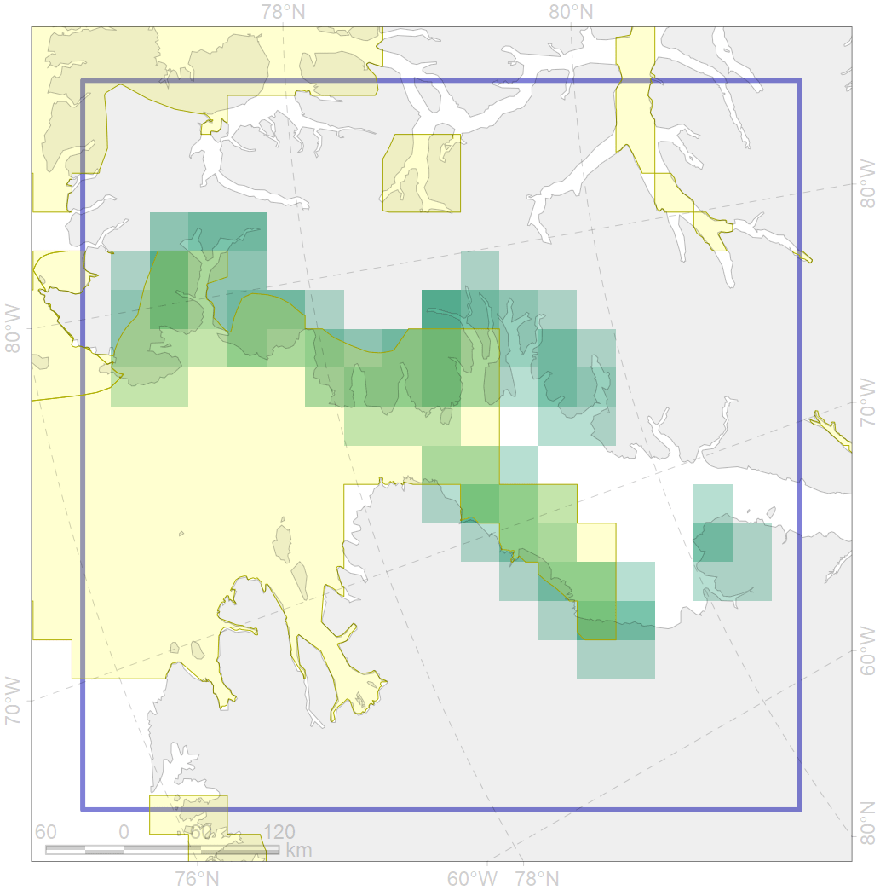
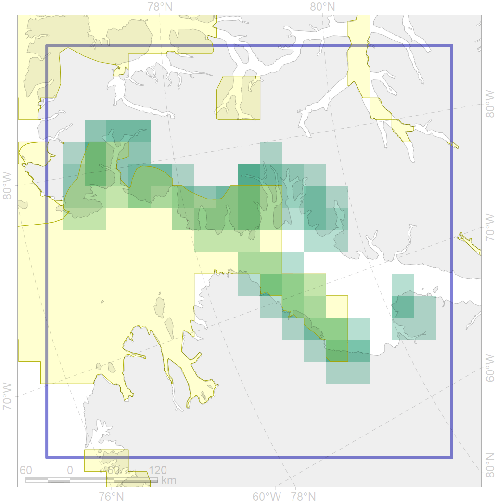

9027
 

| CF code | 9027 |
| CF name | polar bear denning areas of KB (Kane Basin) subpopulation |
| Time Period | prior to 2018 |
| Source(s) | WWF Interim Report - Polar Bear Denning – 2018; Born, 2008 |
| Seasonality | Oct-Apr |
| Depth Horizon | 0 |
| Methodology | Field data, expert opinion, simulation results. |
| Use Restrictions | No use restriction for the project |
| Author Name | Evgeniya Melikhova, Stanislav Belikov |
| Notes | |
| Scenario’s Target | 0.648 |
| Target Achievement | 0.653 (Scenario: 100.7%) |
| PAC | Share of the Total Amount within the PAC | Share of the Target Achievement for the ArcNet | PAC’s Contribution to the Target Achievement |
|---|---|---|---|
| 51 | 61.1%67.7% | 86.7%95.5% | 86.1%94.9% |
| 52 | 0.1%2.4% | 0.1%3.8% | 0.1%3.7% |
| inner | 61.1%70.2% | 86.8%99.3% | 86.2%98.6% |
| outer | 38.9%66.7% | 13.9%49.9% | 13.8%49.6% |
| † supplement values are for area consistence whereas principal values are for Accenter compatible gridded stats |